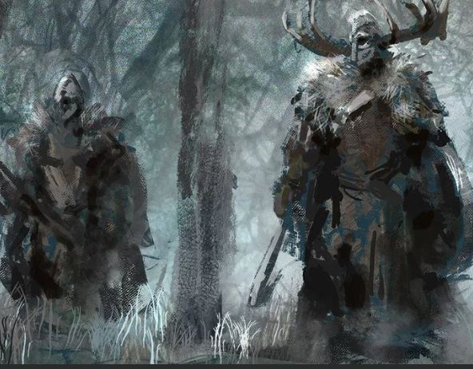
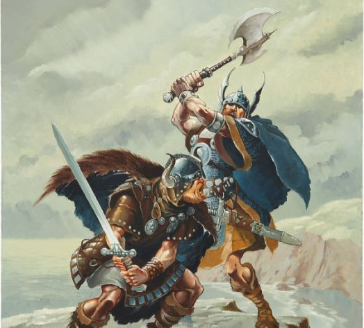
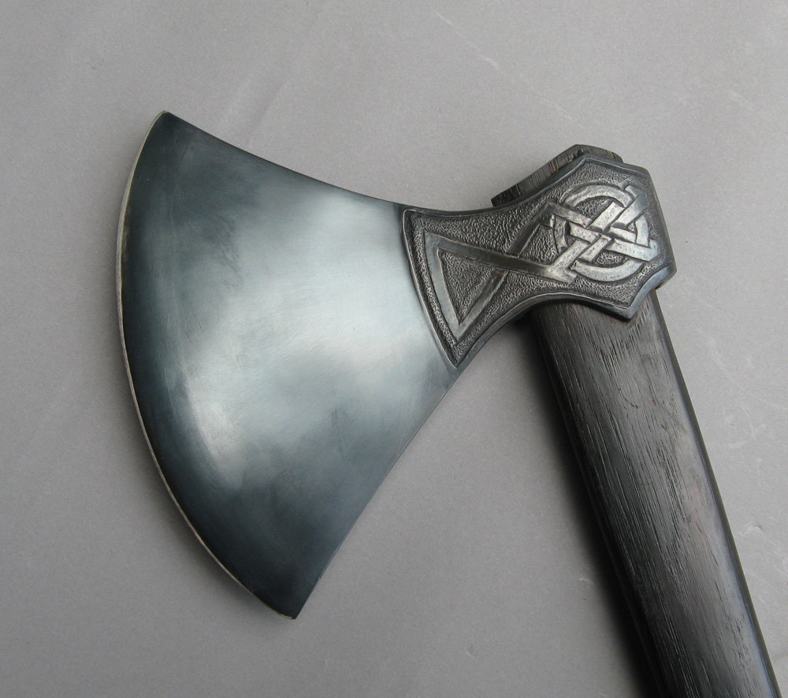

The Vikings were first and foremost warriors from the Scandinavian region. These nordic warriors are often depicted as villains or barbarians, and for a good reason given their common practice of raiding and pillaging defenseless coastal towns and monasteries all across Europe.
Vikings were bold, brave people who no doubt felt the lure of adventure in foreign lands. A strong Norse pagan belief was that each person’s fate was set by the Norns, and that death in battle is not only honorable, but the warrior will be taken to Valhalla by Odin, the god-father.
The Viking battle axes were probably the most used weapon of the Vikings, possibly apart from the spear. The Viking warriors were mostly farmers and farmhands without huge budgets to buy weapons. When going off to fight the Viking would pick the tool he had close at hand, and the axe was something everyone owned.
